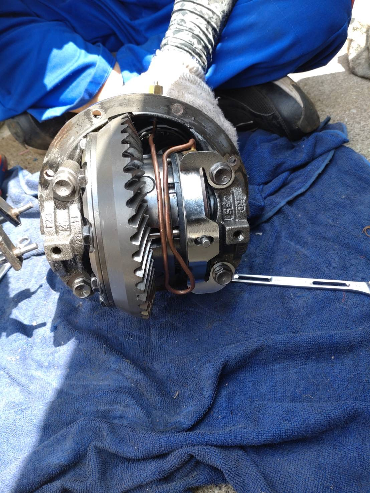
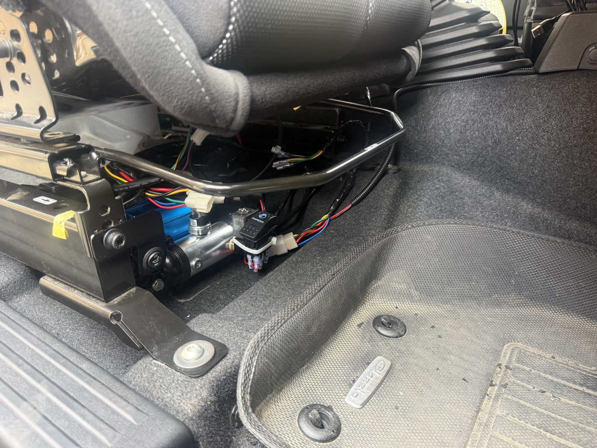
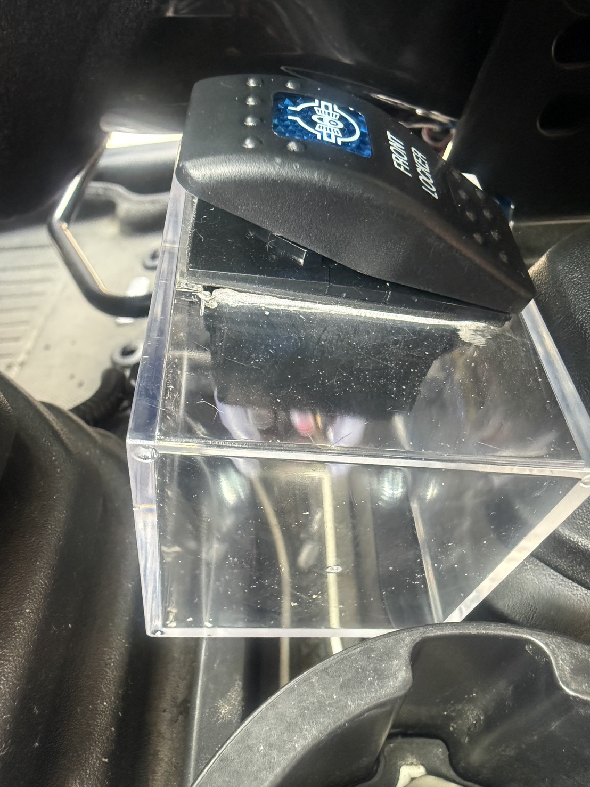
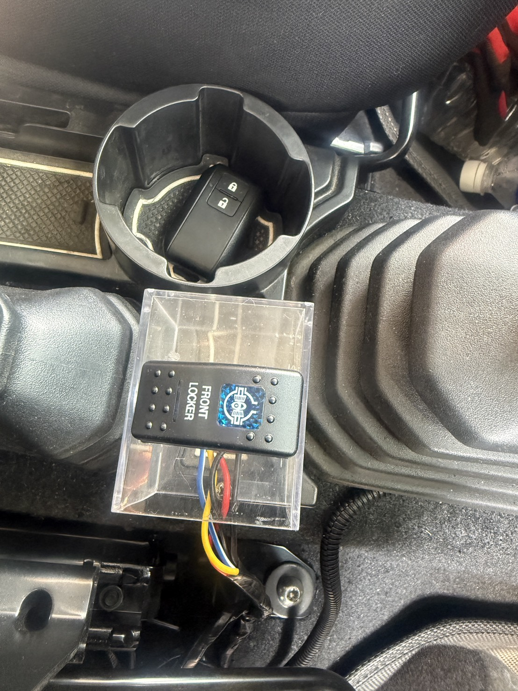

皆様こんにちは、B-STYLEです。
今回は、B-STYLEの新型エアーロッカー「エクスターナルロッカー」を装着したので、その様子をご紹介します。エアーロッカーは空気圧（エア）でデフをロックするデフロッカー。片輪が浮いても両輪にしっかり駆動を伝え、難所での走破性を大きく引き上げてくれる、オフロードの心強い味方です。今回はその最新モデルの装着レポートです。
まずはこちら。デフの中に組み込まれたエアーロッカー本体です。リングギヤの奥に見える銅色のエア配管が、この機構の要。ここに圧縮エアを送り込むことで、デフがロックされる仕組みです。
普段はロックを解除した状態（通常のデフ）で走れるので、街乗りや舗装路でも扱いやすいのが特長です。

デフにエアを送るのが、このコンプレッサー。今回はシート下にすっきりと設置しました。スイッチを入れるとコンプレッサーが作動し、必要なエアを作り出してロッカーへ送り込みます。このようにシートの下にもエアコンプレッサーを収めることができるため、荷室やエンジンルームのスペースを圧迫せず、すっきりとしたレイアウトを実現できます。

操作は、運転席まわりに取り付けた「FRONT LOCKER」スイッチを押すだけ。ここぞという場面でカチッと入れれば即ロック、抜ければ即解除。青く光るスイッチが、走りのスイッチが入った合図です。
今回はスイッチにアクリルのクリアケースを装着し、ちょっとおしゃれに仕上げてみました。また、レースを意識し、トランスファーレバーとシフトレバーの間にスイッチを配置。これにより、左手が無駄なく動作できるルートになっています。


必要な時だけ、スイッチひとつで確実にデフロック。普段は通常走行、いざという難所では最大トラクション——この使い分けができるのが、エアーロッカーの大きな魅力です。
「片輪が空転して進めない」あの悔しさとは、これでお別れ。本気でオフロードを楽しみたい方に、ぜひおすすめしたい一台に仕上がりました。
装着のご相談は、お気軽にお問い合わせください。あなたのジムニーづくり、全力でサポートします。